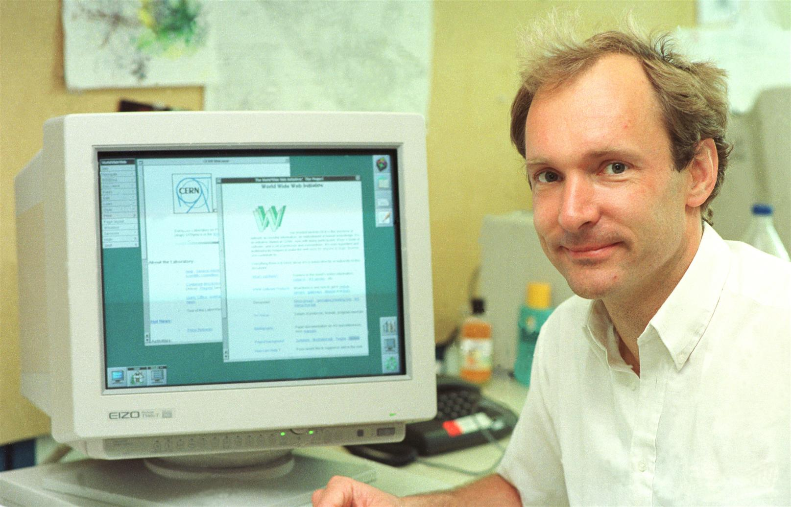

Línea del tiempo de la Web
1989–1991: El nacimiento de la Web
- 1989: Tim Berners-Lee propone la idea de la World Wide Web en el CERN
- 1991: Publicación del primer sitio web
- Tecnologías: HTML inicial

1993–1995: Expansión inicial
- 1993: Se lanza Mosaic, primer navegador gráfico
- 1994: Fundación del W3C (World Wide Web Consortium)
- 1995: Nace JavaScript; Netscape Navigator domina la Web
- Tecnologías: HTML, JavaScript, CSS inicial
1996–2000: La Web comercial
- Surgen buscadores como Altavista, Lycos y Yahoo.
- 1998: Nace Google.
- Uso extendido de HTML con tablas y GIFs animados.
- Tecnologías: PHP, MySQL, AJAX (para sitios dinámicos).

2001–2006: La Web 2.0
- 2001: Se lanza Wikipedia.
- 2003: LinkedIn.
- 2004: Facebook.
- 2005: YouTube.
- Diseño con hojas de estilo (CSS) más elaboradas.
- Tecnologías: HTML, CSS más avanzadas, JavaScript dinámico.
2007–2012: Web móvil y redes sociales
- 2007: iPhone impulsa el diseño responsive.
- 2010: Se popularizan HTML5 y CSS3.
- Redes sociales dominan el tráfico web.
- Tecnologías clave: HTML5, CSS3, frameworks JS iniciales.
2013–2019: Experiencia de usuario y apps web
- Se consolida el diseño plano
- Aplicaciones de una sola página con Angular, React y Vue
- Interfaces limpias y minimalistas
- Tecnologías clave: Frameworks JS modernos
2020–hoy: Web 3.0 y tendencias actuales
- Auge de las Progressive Web Apps (PWA)
- Uso de inteligencia artificial en buscadores y chatbots
- Tendencias: modo oscuro, accesibilidad, 3D, microinteracciones
- Tecnologías clave: Node.js, TypeScript, WebAssembly, tecnologías de IA
Alejandro González Román 2º DAW